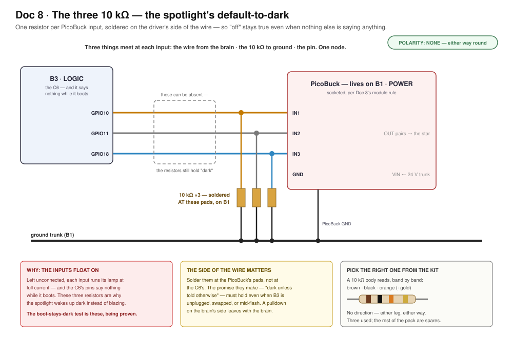
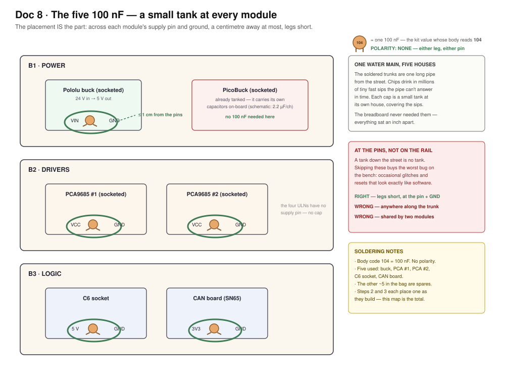
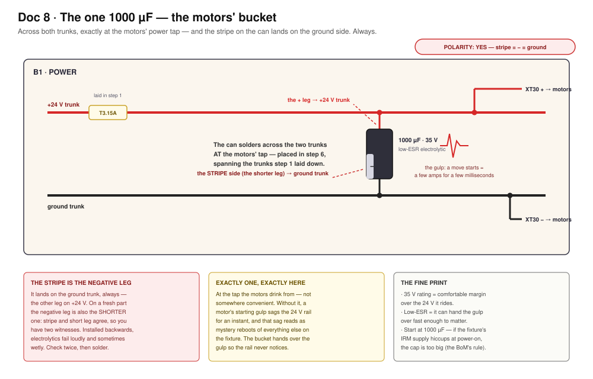
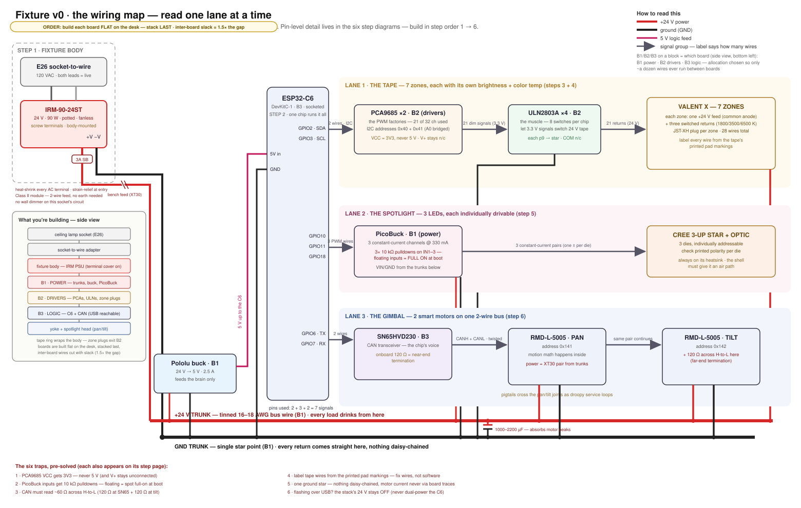
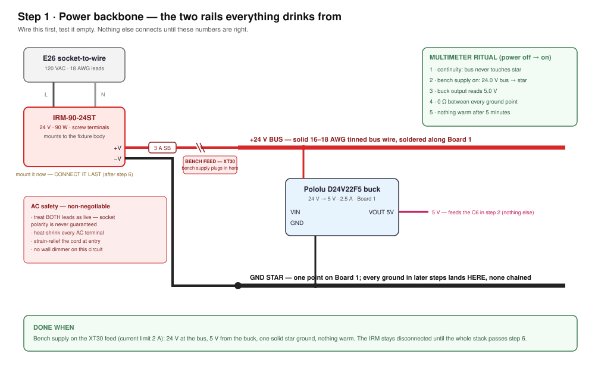
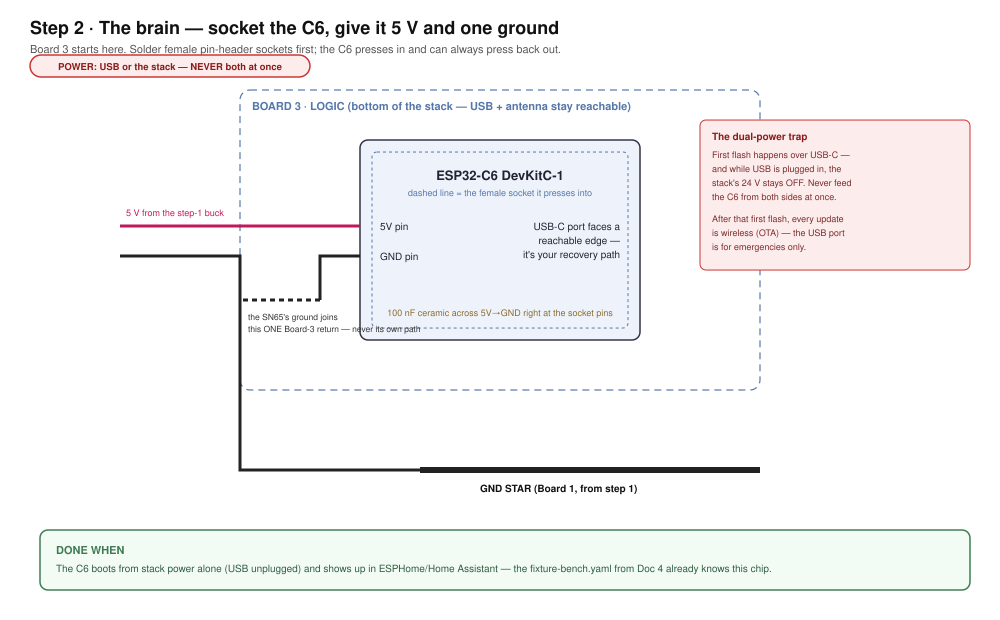
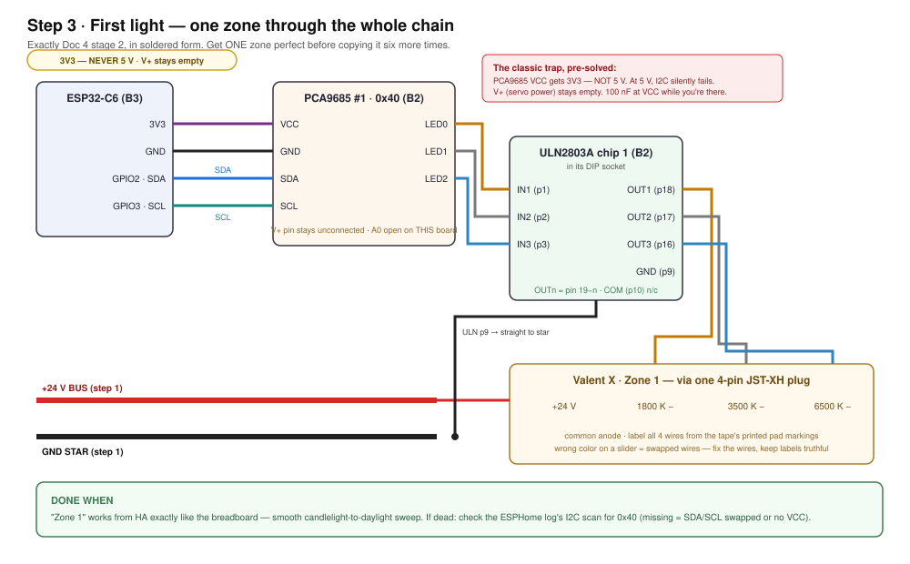
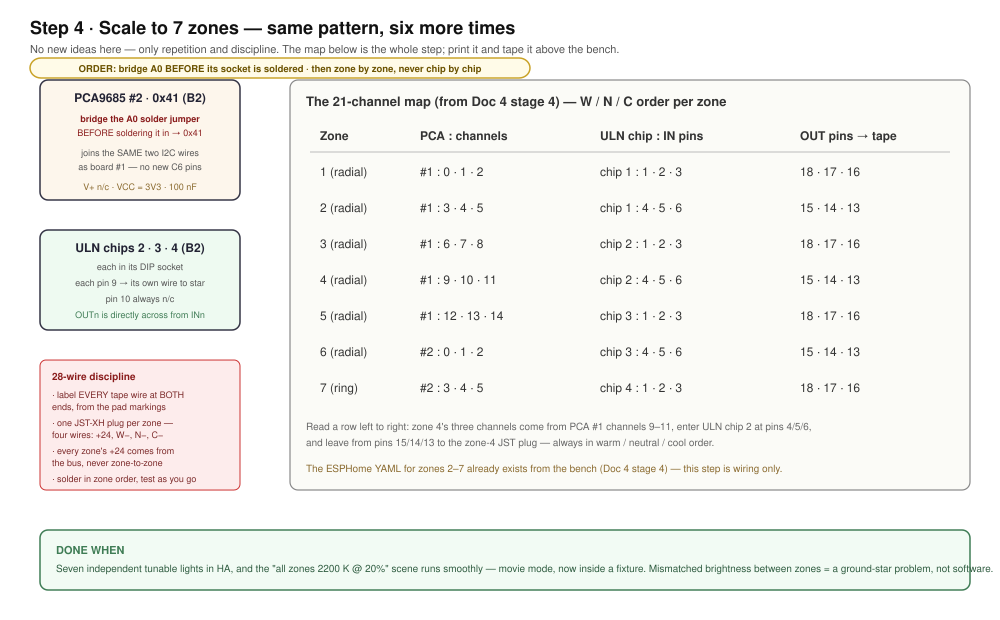
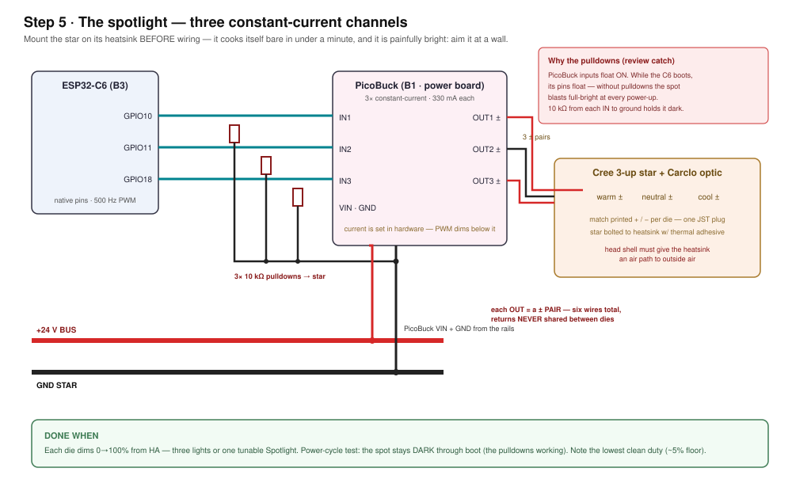
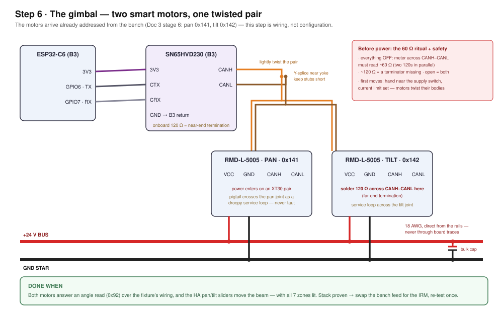

Doc 8 · Build the Fixture — From Breadboard to a Thing That Screws In¶
Engineered Lighting prototype series · July 2026 The bench taught the architecture; this chapter makes it permanent. Nothing new runs here — the YAML, the entities, and the scenes come along unchanged from Doc 4. Every load ends in a plug and every module sits in a socket, so nothing in this build is a one-way door.
The one gate before you start: Doc 4 stage 7's checklist passes on the breadboard. Solder freezes a validated design.
Concepts (plain English)¶
- Trunk: one thick solid wire soldered along a board that everything taps into. This build has exactly two — +24 V and ground.
- Star ground: every ground wire runs directly to one point, never chained device-to-device. Chained grounds are why zones mismatch.
- Socketed module: a board that presses into female pin-headers. A dead module becomes a 10-second swap, not a desoldering job.
- Pigtail & header: the load's short lead ending in a plug (pigtail); the board carries the matching socket (header). Board = header, load = plug.
- JST-XH vs XT30: small white plugs for signals and LEDs (3 A) vs chunky yellow plugs for power (30 A). Tape and spot ride JST; motors ride XT30.
- Bulk cap: a big capacitor that acts like a tiny local battery — it feeds the motors' split-second current spikes so the PSU never sees them.
- Hiccup mode: how the IRM protects itself. Overloaded, it drops the rail and retries. Good protection, confusing symptom: "the whole fixture blinks."
- Service loop: slack wire crossing a moving joint in a droop, never taut (Doc 1's rule, still in force).
- Y-splice: three wire ends twisted, soldered, and covered by one sleeve of heat-shrink — how one CAN pair feeds two motors.
- Standoffs: the threaded nylon pillars that hold stacked boards apart.
What you're building¶
The map below has a side-view panel: lamp socket → adapter → PSU → three stacked boards → gimbal head. The tape ring wraps the body at the middle board's height. Each board has one job:
- B1 · POWER (top, nearest the PSU) — the two trunks, fuse, bench-feed XT30, buck, bulk cap, motor XT30s, and the PicoBuck.
- B2 · DRIVERS (middle) — both PCA9685s, all four ULNs, and the seven zone plugs.
- B3 · LOGIC (bottom) — the C6 and the CAN board, so the USB port, WiFi antenna, and CAN pair all live at the serviceable end.
The PCAs live with the ULNs on purpose: the 21 dim signals never leave their board, and only about a dozen wires ever cross between boards.
The fixture body is its own design track — this chapter builds everything that goes inside it
The body — the enclosure that holds PSU, stack, tape ring, and gimbal together and actually screws in — is being designed separately, as its own CAD project, with the real parts in hand for measuring. Nothing below waits on it: steps 1–6 build and test the whole stack clamped to a bench plate, and step 7 is where electronics and body meet. What the body design owes the electronics is exactly this interface list:
- PSU mount — a flat spot for the IRM-90-24ST brick, 109 × 52 × 33.5 mm plus finger room for its screw-terminal cover, placed away from the LED star's heat.
- Cord entry — a strain-relieved hole where the E26 adapter's two leads enter.
- Stack mounts — three M3 standoff points for the 72 mm board stack, with a vent path past the boards.
- Tape ring at Board 2's height — the seven zone pigtails are short; the tape lives where they reach.
- Gimbal clearance — full pan/tilt travel, plus room for the droopy service loops that cross the joints.
- Heat path — the star's heatsink reaches outside air, or the step-7 soak proves it doesn't have to.
- USB window — Board 3's USB-C stays reachable, so reflashing never means opening the fixture.
Build the stack first, measure the real thing, then freeze the body — the same measure-then-print logic as Doc 3b's coupon-first frame.
Three assembly rules:
- Build each board flat on the desk. Stack last.
- Cut every inter-board wire with slack — 1.5× the gap it crosses.
- Route between-board wires past the board edges, never through the middle.
Soldering these boards (five rules)¶
Tools out: iron, solder + flux, multimeter, wire strippers, flush cutters, heat-shrink + a lighter. The rounds have no power rails — just 593 plated holes — so technique is the whole game:
- Sockets: tack ONE pin, look, then finish. Solder a single corner pin, check the strip sits flat, reflow if tilted, then do the rest.
- A good joint looks like a tiny volcano. Heat pad and lead ~2 seconds, feed solder to the joint (not the iron), let it flow, leave. Blobby ball = cold joint. Redo it with flux.
- Trunks are laid, not drawn. Strip a length of bus wire, lay it along a row of holes, tack it every 4–5 holes. Taps solder straight onto it.
- Beep everything before power. Meter on continuity: every joint you made beeps; every neighboring pad stays silent. This habit replaces most debugging.
- Never crimp. The JST kits come pre-crimped — you solder the bare tails. Board side gets the header, load side gets the plug. XT30s: the half with recessed metal goes on the live side.
Bill of Materials — buy this, ~$105 (+ ~$15 of tools)¶
"Est." = total for the quantity shown. Prices verified July 2026 — re-check when ordering.
| # | Part | Qty | Est. | Where | Notes / traps |
|---|---|---|---|---|---|
| 1 | Round prototyping PCB, 2.84" (72 mm), 593 plated holes, 0.1" pitch | 1 pack of 4 | $15 | Etsy | All three get used — B1 power, B2 drivers, B3 logic — plus a spare. No power rails on these boards, which is why the trunk rule exists |
| 2 | Mean Well IRM-90-24ST (24 V · 3.75 A · potted · fanless · screw terminals) | 1 | ~$25 | Bravo Electro, DigiKey, Mouser | The fixture's PSU. ST variant on purpose: the plain IRM outspans a 72 mm round, so this one mounts to the body — which also keeps the heaviest part off solder joints. Hiccup floor ~103 W clears the ~75 W worst transient |
| 3 | E26 socket-to-wire adapter (660 W rated, 18 AWG leads) | 1 (+1 spare) | $8–12 | Amazon, hardware store | The entire AC feed (~0.6–0.9 A at 120 V). Treat both leads as live; no wall dimmer on that circuit |
| 4 | Female pin-header socket strips, 2.54 mm break-away | 1 kit | $7 | Amazon | Socket every module — C6, both PCAs, CAN board, buck. Dead module = 10-second swap |
| 5 | JST-XH connector kit, pre-crimped leads (2/3/4-pin) | 1 kit | $12 | Amazon | 7 tape zones (4-pin each) + the spot (3 ± pairs = six conductors, returns never shared). You solder the tails — never crimp |
| 6 | XT30 connector pairs | 3 pairs | $8 | Amazon | Motor power (one pair per motor) + the bench-feed break. JST-XH is a 3 A part; motor peaks hit 5–8 A |
| 7 | 100 nF ceramic capacitors | ~10 | $6 | Amazon | One at every module's supply pins — long soldered rails need what the breadboard never did |
| 8 | Electrolytic bulk cap, 1000 µF / 35 V, low-ESR | 1 | $3 | Amazon, DigiKey | Rides the motors' millisecond slew peaks. Start at 1000 µF: the IRM publishes no max capacitive load, so if it hiccups at power-on, the cap is too big |
| 9 | Nylon M3 standoff kit | 1 | $9 | Amazon | Stack spacing + a vent path; nylon can't short against pad-side joints |
| 10 | Tinned solid bus wire, 16–18 AWG | 1 roll | $8 | Amazon | Becomes the two trunks |
| 11 | Wire strippers + flush cutters (if not owned) | 1 each | ~$15 | Amazon | Never in an earlier BoM — the bench got by, but 100+ soldered joints won't |
| 12 | Silicone stranded wire 22–24 AWG + heat-shrink (if not owned) | — | ~$17 | Amazon | The service loops across the pan/tilt joints want the floppiest wire available |
Carries over from Docs 3–4 — $0: both RMD-L-5005 motors (unit 3 stays the permanent bench spare), the C6 devkit, the SN65HVD230, both PCA9685s (#2 keeps its bridged 0x41 jumper), 4× ULN2803A with their DIP sockets, the PicoBuck, the Cree star + Carclo optics + heatsink, the Valent X spool (one spool covers even 2× length), the Pololu buck, the fuse holder + 3 A slow-blow (step to 4 A if you 2× the tape — ~3.1 A sustained nuisance-blows a 3 A), the screw assortment, and the wire + 10 kΩ resistor stock (three of those 10 ks become the PicoBuck pulldowns). The bench supply, multimeter, soldering kit, USB-CAN adapter, and calipers stay on the bench as tools. Retired: the breadboards and the WAGOs — their jobs go to soldered trunks and pluggable pigtails.
The three small parts, and where every one goes¶
Three rows of the BoM are easy to buy and then lose track of: the 10 kΩ resistors, the 100 nF ceramics, and the single big electrolytic. None of them existed on the breadboard — which is exactly why it can be unclear where they belong now. They are one idea at three speeds — hold things steady when something changes faster than the answer can arrive — and each has an exact address:
| Part | How many | Where, exactly | Direction? |
|---|---|---|---|
| 10 kΩ ¼ W resistor | 3 | PicoBuck IN1 / IN2 / IN3, each to the ground trunk — at the driver's pads on B1 (step 5) | no |
| 100 nF ceramic | 5 | one across each socketed module's supply pin and GND: buck, PCA #1, PCA #2, C6 socket, CAN board (steps 2–4) | no |
| 1000 µF / 35 V electrolytic | 1 | across both trunks at the motors' XT30 tap, on B1 (step 6) | yes — stripe to ground |

The resistors are the spotlight's "dark unless told otherwise" — the floats-ON trap is the why. The figure's one rule is the where: at the PicoBuck's pads, so the promise holds even with B3 unplugged, swapped, or mid-flash. Step 5's boot-stays-dark check is these three being proven.

The ceramics are placement, not mystery: across each socketed module's supply pin and ground, a centimetre away at most, legs short. Steps 2 and 3 each place one as they build — this map is the full count of five, including the two no step spells out (the CAN board and the buck). The PicoBuck sits this one out: it carries its own capacitors on-board.

The electrolytic is the only one of the three with a direction — stripe to ground, always — and the only one with a single address: across the trunks at the motors' tap, placed in step 6, spanning the copper step 1 laid down.
The map — read one lane at a time¶

One chip runs everything on seven signal pins: 2 wires of I²C (21 tape channels via the PCA9685s), 3 PWM pins (spotlight), 2 CAN pins (both motors, by address). Power is two trunks on B1. Then build in order — each step is one bench session, and each has its own diagram below:
| Step | What | Rough time |
|---|---|---|
| 1 | Power backbone | 1–2 h |
| 2 | The brain | 30–45 min |
| 3 | First light (zone 1) | 1–2 h |
| 4 | Scale to 7 zones | an afternoon — it's 28 wires |
| 5 | Spotlight | ~1 h |
| 6 | Gimbal | 1–2 h |
| 7 | Real PSU + verdict | ~1 h + a 30-min soak |
Step 1 — Power backbone¶
Hands-on stage — no agent lane; the level-3 wiring photo check applies.

What's happening: you're building the two rails everything else drinks from — and testing them empty.
Do this:
- Set the IRM aside — it mounts to the body at step 7 and stays disconnected until then. Everything until then runs from the bench supply.
- Lay the +24 V trunk and the ground trunk along B1 (rule 3).
- Solder in the fuse holder, then the bench-feed XT30 in the +24 V run.
- Mount the buck; wire VIN and GND to the trunks.
- Beep-test every connection (rule 4), then clip the bench supply to the bench-feed, current limit at 2 A.
Done when: 24 V at the bus, 5 V from the buck, one solid star ground, nothing warm after five minutes.
If stuck: no 24 V = fuse not seated or supply leads reversed. Buck reads 0 V = VIN/GND swapped — it survives that; fix and re-test.
Step 2 — The brain¶

What's happening: B3 gets its socket, the C6 presses in, and the fixture gains a computer.
Do this:
- Solder female socket strips for the C6 (rule 1 — tack one pin first).
- Point the USB-C port at the serviceable end; keep the antenna end away from the ground trunk.
- Run 5 V and GND up from B1. Add a 100 nF cap right at the socket's power pins.
- Press the C6 in.
Done when: the C6 boots from stack power alone (USB unplugged) and shows up in Home Assistant.
If stuck: measure 5.0 V at the C6's socket pins, not at the buck — a tilted socket or dry joint drops it on the way.
The dual-power trap
First flash happens over USB — and while USB is plugged in, the stack's 24 V stays OFF. Never feed the C6 from both sides at once. After that first flash, every update is wireless.
Step 3 — First light¶
Hands-on stage — no agent lane; the level-3 wiring photo check applies.

What's happening: one zone travels the whole chain — C6 → PCA #1 → ULN chip 1 → plug → tape. Get ONE zone perfect before copying it six times.
Do this:
- On B2: solder the PCA #1 socket and the ULN chip-1 DIP socket.
- Run four wires up from B3: 3V3, GND, SDA (GPIO2), SCL (GPIO3).
- Wire PCA LED0/1/2 to ULN IN1/2/3; OUT18/17/16 to a 4-pin zone header. Counting those pins for the first time? Doc 4a's ULN pin map numbers every one of them on the real chip, and its zone-1 figure photographs this whole step, hub hole to tape pad.
- Solder the zone-1 pigtail to the tape: +24 V and three channel negatives, labeled from the tape's printed pad markings.
- Run the zone's +24 V wire from the trunk; ULN pin 9 goes straight to star.
- Beep-test, power up, test from HA.
Done when: "Zone 1" sweeps candlelight→daylight from HA, exactly like the breadboard.
If stuck: the ESPHome log's I2C scan says whether 0x40 was found (missing = SDA/SCL swapped or no VCC). Found but dark = beep the LED0→IN1 and OUT1→plug runs.
The classic trap, pre-solved
PCA9685 VCC gets 3V3 — never 5 V (at 5 V, I2C fails silently). V+ stays empty. Drop a 100 nF at VCC while you're there.
Step 4 — Scale to seven¶

What's happening: nothing new — six repeats of step 3, driven by the channel map on the diagram. Print it; tape it above the bench.
Do this:
- Bridge PCA #2's A0 jumper before soldering its socket → it answers at 0x41 on the same two I2C wires. Doc 4a photographs those pads open and bridged, with the meter reading each one must give — a blob can look bridged and touch only one pad.
- Seat ULN chips 2–4 in their sockets.
- Work zone by zone from the map: three channels in, three out, one plug. Test each zone as its plug lands — unwired zones just sit dark in HA.
- Label all 28 wires at both ends. Every zone's +24 V comes from the trunk, never from a neighboring zone.
Done when: seven independent tunable lights, and the "all zones 2200 K @ 20%" scene runs — movie mode, now inside a fixture.
If stuck: one zone dead? The sockets are your superpower — swap ULN chip 1 and chip 2. Problem follows the chip → chip; stays with the zone → wiring. Wrong colors = swapped wires at the plug. Fix wires, not YAML.
Step 5 — The spotlight¶

What's happening: three PWM wires dim three constant-current channels, one per LED die. Each die is individually drivable — one tunable Spotlight or three separate lights is firmware's choice, not wiring's. Meeting the driver or the bare star for the first time here? Doc 4b is the bench version of this exact step — the same blocks demystified, the S-checkpoints, and the which-die-is-which naming ritual whose flags this step's wiring should already carry.
Do this:
- Mount the star on its heatsink first and aim it at a wall — it cooks itself bare in under a minute and it is painfully bright.
- Run GPIO10/11/18 from B3 to the PicoBuck's IN1/2/3 on B1.
- Solder a 10 kΩ pulldown from each IN to ground — the small-parts figure draws the exact node: wire, resistor, and pin, all meeting at the driver's pad.
- Wire PicoBuck VIN/GND to the trunks.
- Wire the three outputs to the three dies: each output is a ± pair — six conductors total — and the returns never share a wire. Match the printed +/− on each die.
Done when: every die dims cleanly from HA, and a power-cycle stays dark through boot.
If stuck: one die dark = that pair's polarity, or two wires swapped with a neighbor's pair. All dark = pulldowns shorted or PWM lines on the wrong GPIOs.
Why the pulldowns
PicoBuck inputs float ON, and the C6's pins float while it boots — without pulldowns the spot blasts full-bright at every power-up. The boot-stays-dark test in the done-when is these resistors earning their keep.
Step 6 — The gimbal¶
Hands-on stage — no agent lane; the level-3 wiring photo check applies.

What's happening: the motors keep their bench addresses (pan 0x141, tilt 0x142 — set in Doc 3 stage 6), so this is wiring, not configuration.
Do this:
- Wire the SN65 on B3: 3V3, GND to the B3 return, CTX←GPIO6, CRX←GPIO7.
- Lightly twist the CANH/CANL pair; run it toward the yoke.
- Y-splice the pair (three ends, one joint, one sleeve of shrink) — short stubs to each motor's CANH/CANL.
- Solder a 120 Ω resistor across CANH–CANL at the tilt motor.
- Motor power: one XT30 pair per motor, 18 AWG straight from the trunks; the bulk cap sits at that tap — stripe to the ground trunk, per the small-parts figure. Pigtails cross each joint as droopy service loops.
- Everything OFF: meter across CANH–CANL must read ~60 Ω. (~120 = a terminator missing; open = both.)
- Raise the bench supply's limit toward 3 A — two motors plus every LED can clip a 2 A limit and sag the rail, which reads as mystery resets.
Done when: both motors answer an angle read over the fixture's own wiring, and the HA pan/tilt sliders move the beam — with all seven zones lit.
If stuck: no reply = the Doc 3 stage-4 ladder, in order: 60 Ω check → common ground → CANH/CANL swapped → motor unpowered. Replies but no motion = you're in Hold/Manual mode, not a wiring problem.
Motors are watched, always
First moves happen with your hand near the supply switch and the current limit set. A commanded motor twists its own body as hard as its shaft.
Step 7 — Swap in the real PSU, then the verdict¶
This is where the fixture body enters: mount the IRM to it, give the E26 adapter's cord a strain-relieved entry, and give the star's heatsink its air path. (The body arrives from its own design track — the interface list up top is exactly what this step needs it to provide.)
Do this:
- Disconnect the bench feed.
- Land the E26 adapter's leads and the trunk wires on the IRM's screw terminals — L, N, +Vo, −Vo; there is no earth terminal and none is needed (Class II). As built, the ST's output block duplicates its terminals — two +Vo screws and two −Vo screws, internally one output — land the pigtails one per screw. Fit the terminal cover; screw blocks can't be heat-shrunk.
- Strain-relieve the adapter leads where they enter the body.
- Screw it into a socket and re-run the short version of everything.
🤖 Give this to your agent
You're my bench agent for the Engineered Lighting fixture build
(chapter: engineering.engineered.lighting/08-build-the-fixture/,
step 7 — the verdict soak). The hand-soldered fixture is assembled and
running on its internal IRM-90-24ST; Home Assistant sees all 7 zones,
the Spotlight, and the pan/tilt controls. Start by proposing a plan
and wait for my approval before executing anything. Then run the
verdict with me: walk me through each checklist item in the chapter,
and for the 30-minute everything-on soak, watch the ESPHome device
logs the whole time and summarize warnings, resets, and any
"took a long time" lines; I handle the touch tests and read the
worst-case current from the meter at the bench-feed point before we
switch to the IRM.
SAFETY — non-negotiable: never command motor motion unless I confirm
I'm watching with a hand near the supply switch. Announce each motion
command before sending it and wait for my explicit go.
Done when: every checklist item passes on IRM power.
Report back: the checklist with pass/fail and evidence per item, and
the soak-log summary.
- All 7 zones + spotlight + gimbal work on IRM power
- Power-cycle at the wall switch: the fixture wakes knowing its angles (no homing), and the spot stays dark through boot
- 30-minute soak, everything on: ULNs warm-not-hot, star heatsink warm, IRM case warm-not-hot, no reboots in the logs
- Worst-case 24 V current recorded — compare against the ~60 W budget
Risk register¶
- Protoboard joints under vibration — the gimbal shakes its own house. Strain-relieve pigtails at each board edge; the socketed modules are the serviceable insurance.
- Heat in an enclosure — the soak test is the truth. The star's heatsink needs an air path through the shell; the IRM sits away from the LED thermal mass.
- Inter-board wiring is where beginner builds die — hence the board allocation that keeps it to ~a dozen wires, the slack rule, and build-flat-stack-last.
- Supply substitutions — if the IRM-90-24ST drifts out of stock, the sizing logic is the spec, not the part number: steady ~25–40 W, transients +30–40 W, and the replacement's hiccup floor must clear the sum.